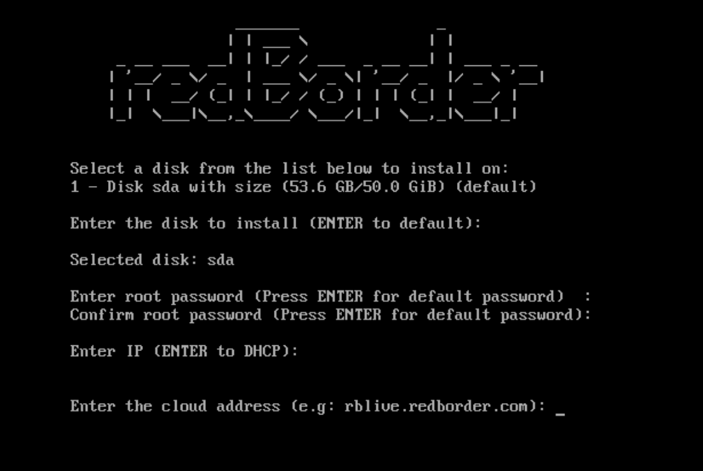

Prev
User Guide
Next
Chapter 2. Redborder Flowgate Internal Configuration
2.1. Basic Configuration
2.2. Advanced Configuration
2.1. Basic Configuration

Figure 1: Basic Configuration
You can configure the IP of the proxy manually or through DHC.
The cloud address field can have an IP (belonging to the redborder manager), or a domain. In this case the domain will be used.
Prev
1.5. Installing the ISO
Up
Home
Next
2.2. Advanced Configuration